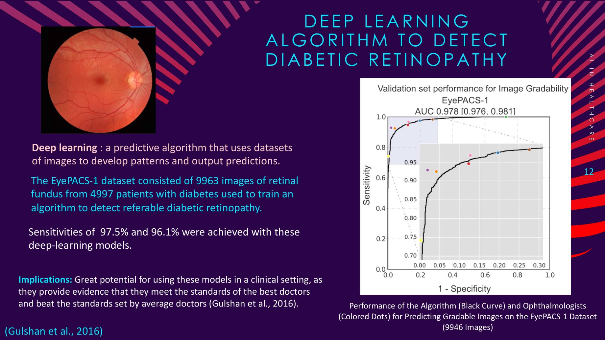
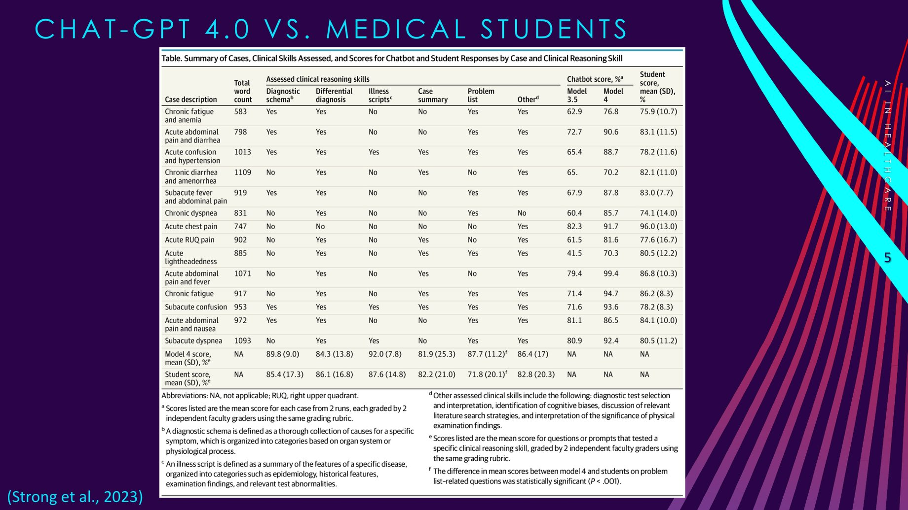
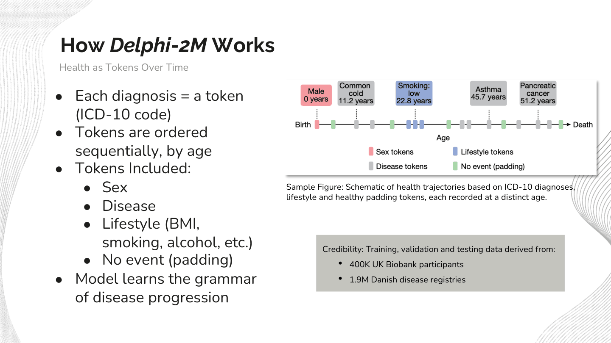

Data Science & NLP News Digests
A recurring weekly presentation series distilling selected data science and NLP research for a technical audience: what the study actually found, why it matters, and what its limitations are, in about ten slides.
Same structure every week, different research
Each edition follows the same arc: why the topic matters, what the underlying research actually did, the real numbers behind the headline, and an honest look at what the study can't yet claim. Two representative editions are summarized below.
AI in Healthcare: Challenges & Breakthroughs
A survey of selected applications of AI in medicine, diagnostic imaging, remote monitoring, predictive risk scoring, administrative automation, anchored by two specific studies rather than general hype.

The algorithm's ROC curve (AUC 0.978) against individual ophthalmologists' sensitivity/specificity trade-offs, most human readers fall below the curve.
The same edition also covered a Stanford study where GPT-4 outperformed first- and second-year medical students on clinical reasoning exams, evidence, the deck argued, that medical curricula need to start teaching AI literacy rather than treating it as external to the field.

GPT-4 (Model 4) beat student scores on most clinical-reasoning skills and showed a clear jump over GPT-3.5, though students still edged it out on differential diagnosis.
How GPT-Style AI Could Transform Preventive Medicine
A deep dive into Delphi-2M (Shmatko et al., Nature, 2025), a GPT-style transformer that treats a patient's health history as a sequence of tokens, one per diagnosis, ordered by age, the same way a language model treats a sentence as a sequence of words.

Delphi-2M's core idea: a health history becomes a token sequence the model can learn the "grammar" of, the same architecture that powers a language model.
Source: Shmatko et al., Nature (2025). The Danish cohort was used for external validation without retraining.
What both editions kept coming back to
The numbers earn the headline
The briefs emphasize study-specific findings and distinguish reported benchmark performance from evidence of clinical effectiveness.
Architecture transfers across domains
Delphi-2M adapts a transformer architecture to longitudinal health records. Its results illustrate a research direction, not a general guarantee that language-model methods transfer successfully to clinical tasks.
Every promising result comes with a limitation
Neither model is presented as clinic-ready, Delphi-2M's own authors flag demographic bias risk and note its predictions are probabilities, not certainties.